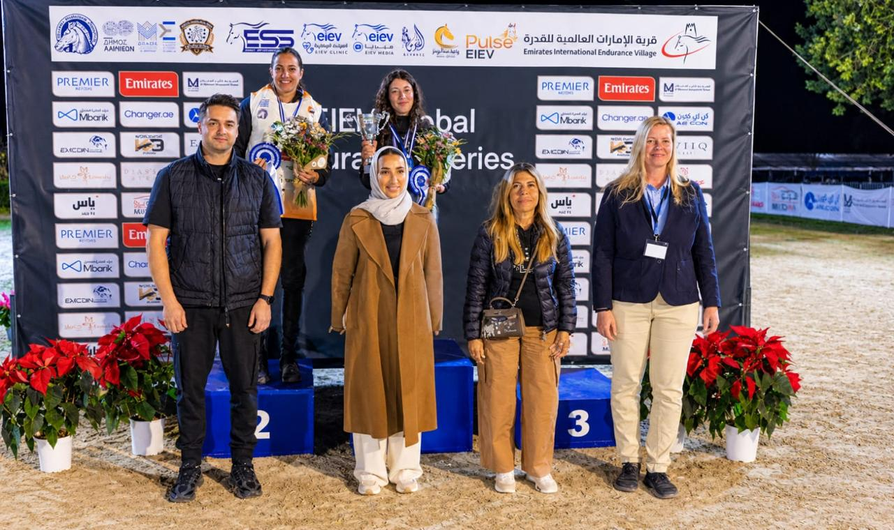
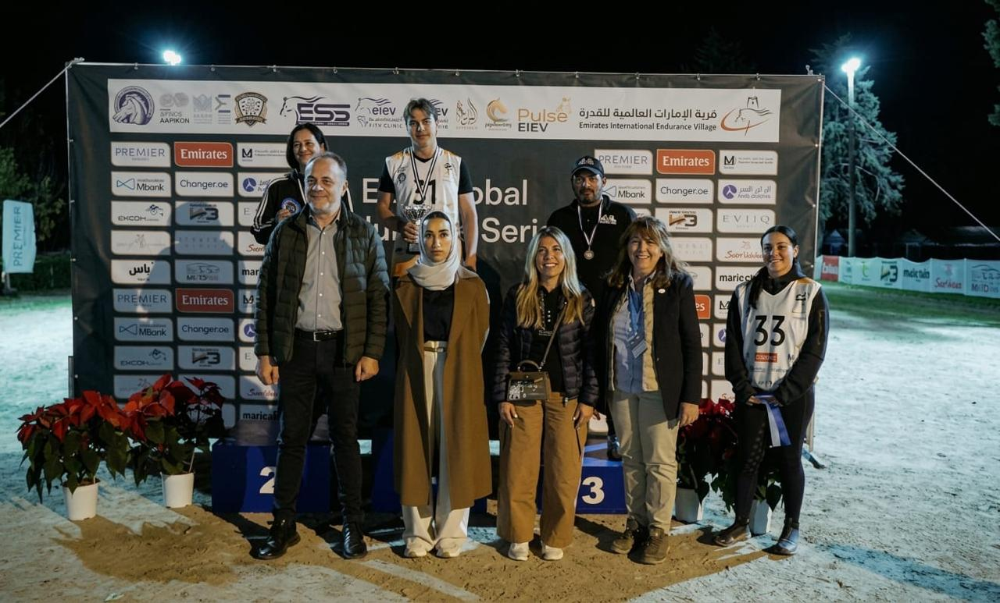

Lamia a accueilli l’épreuve principale de 143,7 km en cinq boucles. Santa Susanna, en Espagne, est annoncée comme prochaine étape en décembre.
La cavalière grecque Areti Patsioura, en selle sur Salamon Ektoras R, a remporté l’épreuve principale de la neuvième étape du circuit mondial de l’Emirates International Endurance Village, organisée à Lamia, en Grèce, le samedi 21 novembre 2026.
L’épreuve trois étoiles s’est déroulée en cinq boucles sur une distance réelle de 143,7 km, selon le programme publié par la Fédération équestre hellénique.
Une coopération entre les Émirats et la Grèce
Cette étape a été organisée dans le cadre d’un partenariat entre l’Emirates International Endurance Village, EIEV PULSE et la Fédération équestre hellénique, sous l’égide de la Fédération équestre internationale (FEI). La manifestation réunissait des épreuves internationales et des compétitions nationales grecques d’endurance.
Le programme international comprenait des épreuves deux étoiles et une étoile sur des distances réelles de 121,2 km et 105,6 km, avec des compétitions réservées aux jeunes cavaliers et aux juniors.
Les titres et la remise des prix
Maria Roussi, avec Zagira, a remporté l’une des épreuves deux étoiles. Savvina Maria Theodorou, avec Azira, s’est imposée dans une épreuve une étoile, tandis que Sofia Fileli, avec Hifa, a décroché un autre titre une étoile.
Les lauréats ont été récompensés en présence de Mahra Ali Al Shaya, chargée d’affaires à l’ambassade des Émirats arabes unis en Grèce, de Lara Sawaya, directrice exécutive du marketing et du parrainage du village et d’EIEV PULSE, ainsi que du maire et de représentants de Lamia.

Prochaine étape en Espagne
Selon le dossier de presse de cette étape, le circuit se rendra ensuite à Santa Susanna, en Espagne, pour sa dixième étape, annoncée le 4 décembre 2026.
Hellenic Equestrian Federation — Lamia competition programme · Emirates News Agency — Lamia results, 22 November 2026
Photos : dossier de presse des courses de l’Emirates International Endurance Village.